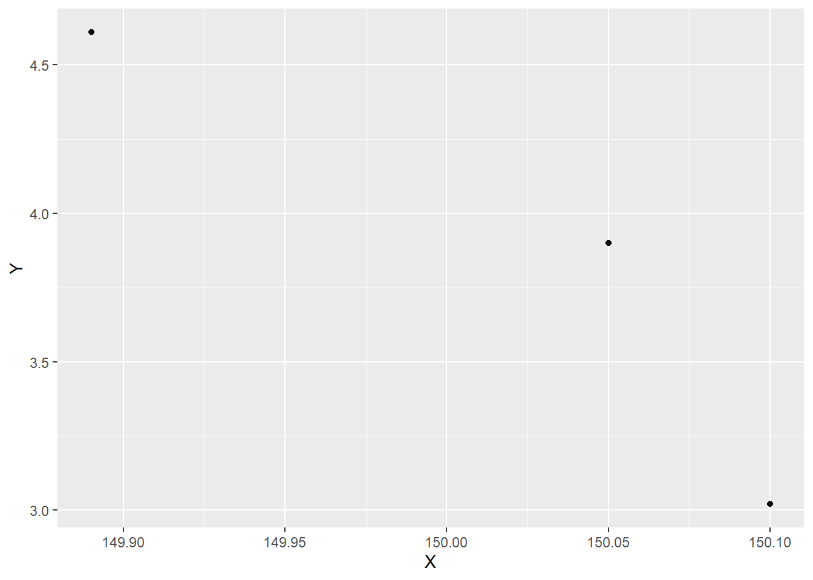

library(tidyverse)
library(readxl)
library(WDI) # tambahkan library lain jika diperlukanPengaruh Unmet Need terhadap Angka Harapan Hidup Di Yogyakarta Tahun 2019-2021
Metode Penelitian Politeknik APP Jakarta

0.1 Pendahuluan
0.1.1 Latar belakang
Hingga saat ini Unmet need masih menjadi permasalahan program Kependudukan dan Keluarga Berencana di beberapa daerah di Indonesia. Tidak meratanya persebaran fasilitas KB diseluruh Indonesia menyebabkan Rumah Tangga yang tidak menginginkan kelahiran terpaksa harus menerima hal tersebut. Oleh karena itu, hal tersebut dapat menyebabkan kelahiran yang tidak diinginkan dan ditakutkan akan memiliki dampak pada Angka Harapan Hidup bagi bayi dan anak.
0.1.2 Ruang lingkup
Ruang lingkup pembahasan masalah sesuai dengan variable yang akan digunakan pada analisis kali ini. Yaitu Jumlah Unmet Need, Angka Harapan Hidup pada tahun 2019-2021. Batasan masalah ini berperan membantu dalam mengidentifikasi masalah yang akan dibahas dan membatasi jangkauan proses yang dibahas.
0.1.3 Rumusan masalah
Apakah Unmet Need berpengaruh terhdap Angka Harapan di Indonesia pada tahun 2019-2021 ?
0.1.4 Tujuan dan manfaat penelitian
Tujuan penelitian ini untuk mengetahui pengaruh Unmet Need pada tahun 2019-2021 dengan Angka Harapan Hidup pada tahun 2019-2021 .
Manfaat penelitian ini agar masyarakat dapat mengetahui pengaruh Unmet Need pada Angka Harapan Hidup pada tahun 2019-2021 .
0.1.5 Package
#|warning : false
#|echo : true
library("readxl")
library("dplyr")
library("ggplot2")0.2 Studi pustaka
Unmet Need adalah persentase perempuan menikah yang tidak ingin mempunyai anak lagi atau ingin menunda kelahiran berikutnya namun tidak menggunakan alat kontrasepsi. Unmet need juga dapat diartikan sebagai kelompok yang tidak ingin mempunyai anak lagi atau ingin menunda kehamilan hingga 2 tahun namun tidak menggunakan alat kontrasepsi untuk mencegah kehamilan.
0.3 Metode penelitian
0.3.1 Data
| Tahun | AHH | Unmet Need |
|---|---|---|
| 2019 | 149.89 | 4.61 |
| 2020 | 150.05 | 3.9 |
| 2021 | 150.10 | 3.02 |
Penelitian ini menggunakan data menggunakan data sekunder dengan bentuk data time series 2019-2021. Data yang digunakan adalah data yang telah diolah oleh Badan Pusat Statistik Yogyakarta.
membaca data
#import dataset
library(readxl)
dat<-read_excel("DATA BPS.xlsx")
head(dat)# A tibble: 3 × 3
TAHUN X Y
<dbl> <dbl> <dbl>
1 2019 150. 4.61
2 2020 150. 3.9
3 2021 150. 3.021 A tibble: 3 × 3
TAHUN X Y
membaca data
#import dataset
library(readxl)
dat<-read_excel('DATA BPS.xlsx')
head(dat)# A tibble: 3 × 3
TAHUN X Y
<dbl> <dbl> <dbl>
1 2019 150. 4.61
2 2020 150. 3.9
3 2021 150. 3.02ggplot(data=dat,aes(x=X,y=Y)) +
geom_point ()
1.0.1 Metode analisis
Metode yang dipilih adalah regresi univariat atau Ordinary Least Square (OLS) dengan 1 variabel independen. Penelitian ini merbaksud mencari hubungan antara hwy dan cty. Spesifikasi yang dilakukan adalah:
\[ y_{t}=\beta_0 + \beta_1 x_t+\mu_t \] di mana \(y_t\) adalah Unmet Need dan \(x_t\) adalah AHH.
1.1 Pembahasan
1.1.1 Pembahasan masalah
#import dataset
library(readxl)
dat<-read_excel('DATA BPS.xlsx')
head(dat)# A tibble: 3 × 3
TAHUN X Y
<dbl> <dbl> <dbl>
1 2019 150. 4.61
2 2020 150. 3.9
3 2021 150. 3.02Pada bagian ini dapat ditampilkan data dan visualisasi data yang telah dikumpulkan.
1.1.2 Analisis masalah
Hasil regresinya adalah
reg1<-lm(X~Y,data=dat)
summary(reg1)
Call:
lm(formula = X ~ Y, data = dat)
Residuals:
1 2 3
-0.02434 0.04398 -0.01964
Coefficients:
Estimate Std. Error t value Pr(>|t|)
(Intercept) 150.50958 0.18676 805.887 0.00079 ***
Y -0.12912 0.04791 -2.695 0.22621
---
Signif. codes: 0 '***' 0.001 '**' 0.01 '*' 0.05 '.' 0.1 ' ' 1
Residual standard error: 0.05397 on 1 degrees of freedom
Multiple R-squared: 0.879, Adjusted R-squared: 0.7579
F-statistic: 7.262 on 1 and 1 DF, p-value: 0.22621.2 Kesimpulan
Dari hasil yang diperoleh dapat dikatakan bahwa model regresi yang dihasilkan tidak menunjukkan adanya pengaruh yang signifikan antara Unmet Need dan Angka Harapan di Indonesia pada tahun 2019-2021. Hal ini didukung oleh nilai p yang tinggi untuk koefisien Y, serta F-statistic yang tidak signifikan.
1.3 Referensi
Rahayu, A., Suharsih, S., & Julianto, E. A. (2022). Determinants of unmet need for family planning in Sleman District, Yogyakarta Province, Indonesia. Economics and Business Quarterly Reviews, 5(3).
Sarlis, N. (2019). Faktor yang Berhubungan dengan Unmet Need Pada Ibu Non Akseptor Tahun 2018. Jurnal Endurance, 4(2), 272-281.
Sulistiawan, D., Gustina, E., Matahari, R., & Marthasari, V. (2020). Profil Sosiodemografis Unmet Need Keluarga Berencana pada Wanita Kawin di Daerah Istimewa Yogyakarta. Jurnal Keluarga Berencana, 5(2), 1-9.